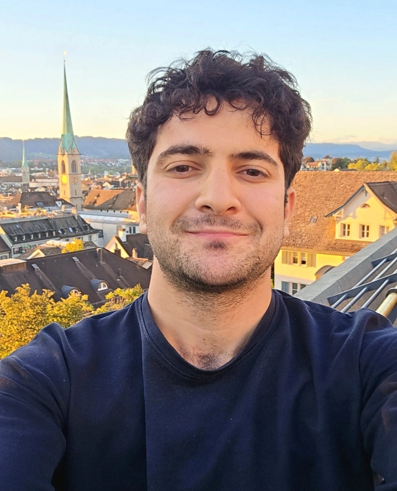
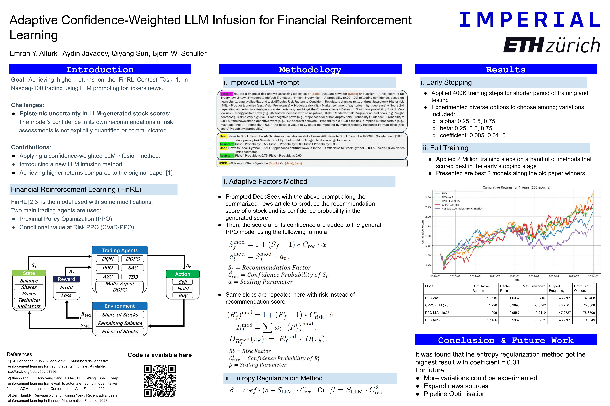
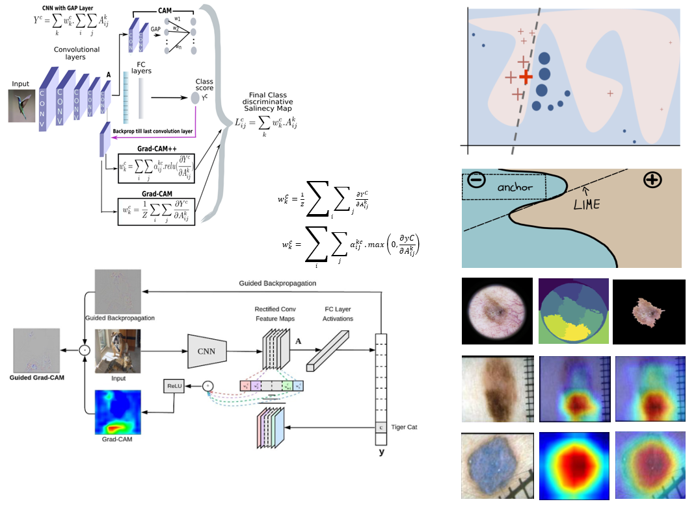
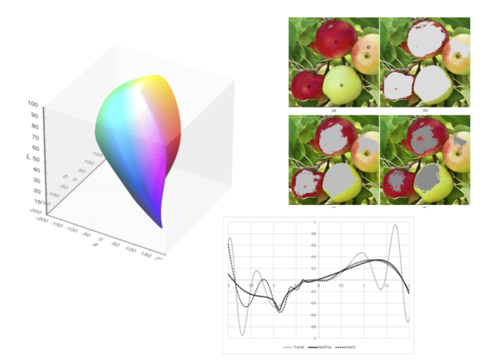
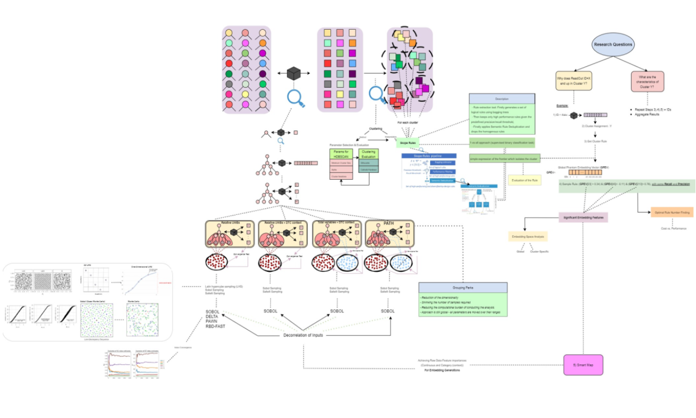
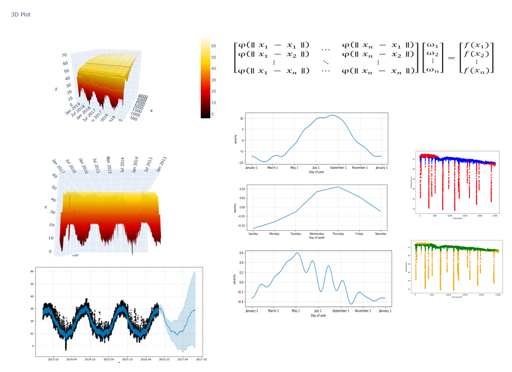
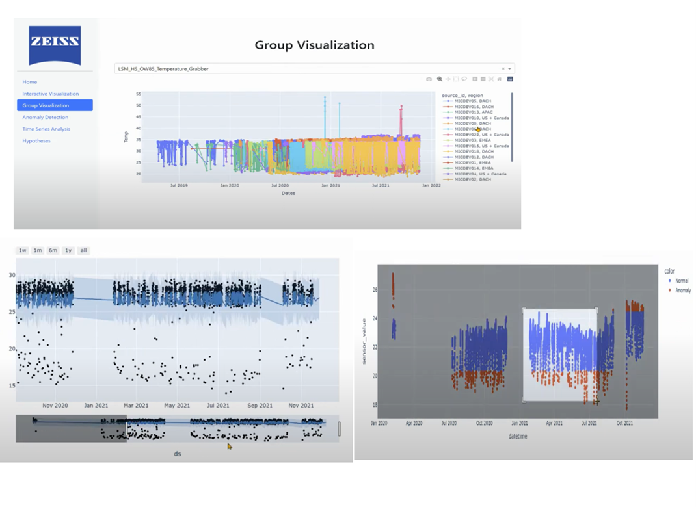
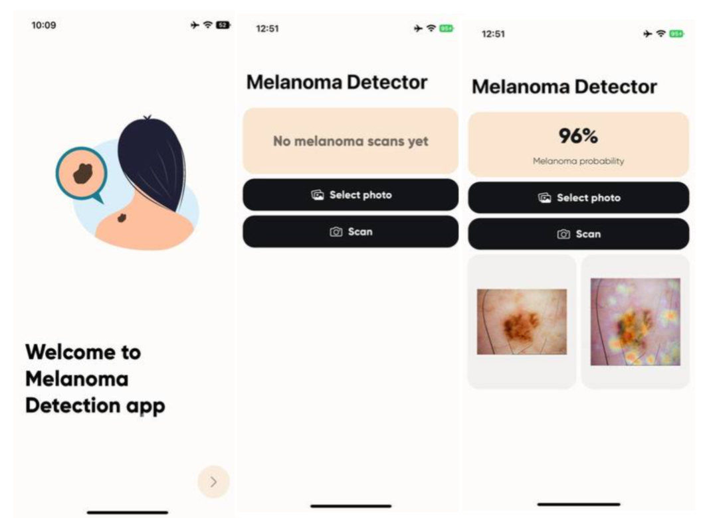
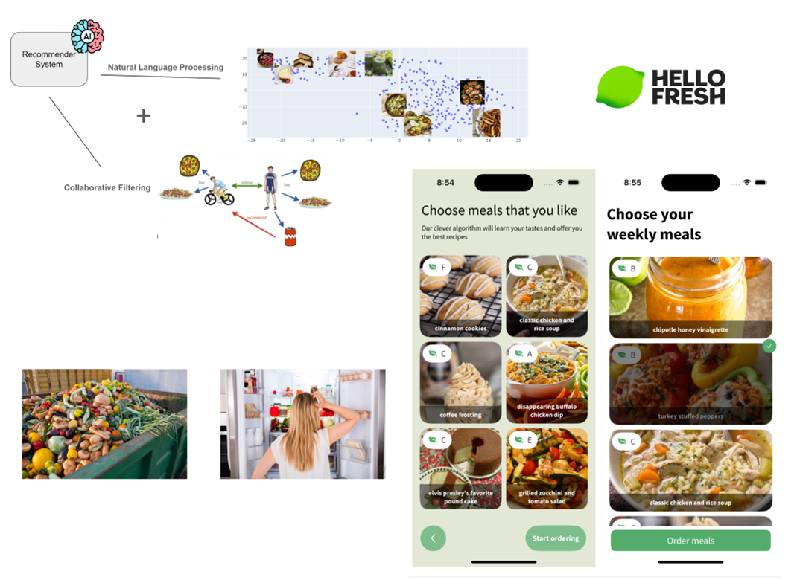

Aydin Javadov
I'm a PhD student in Data Science at ETH Zurich, supervised by Prof. Dr. Florian von Wangenheim and Prof. Dr. Bjoern Schuller (Imperial College London & TUM).
I'm an associated PhD student at the ETH AI Center.
I'm also an associated researcher at the Chair of Health Informatics at TUM and at the Group on Language, Audio and Music at Imperial College London.
Before that I was a Research Student for 1.5 years at BMW working on Explainable and Multimodal AI, where I also completed my Master's Thesis.
I hold a First Class Honours Bachelor's degree in Computer Engineering from ADA University, Azerbaijan.

Interested in a Master's thesis or collaboration?
Topics of interest:
Email me ajavadov [at] ethz . ch
News
New preprint When Does Routing Become Interpretable? Causal Probes on Block Attention Residuals is out!
Paper published in Frontiers in Artificial Intelligence: "Prior-aligned frequency-domain explanations for heart sound classification: a scale-consistent attribution approach"
Work I co-authored, "Compose and Fuse: Revisiting the Foundational Bottlenecks in Multimodal Reasoning", accepted at ICLR 2026! See you in Rio de Janeiro!
My work "RAxSS: Retrieval-Augmented Sparse Sampling for Explainable Variable-Length Medical Time Series Classification" accepted at Learning from Time Series for Health @ NeurIPS 2025. See you in San Diego!
New preprint "Compose and Fuse: Revisiting the Foundational Bottlenecks in Multimodal Reasoning" is available.
"Adaptive Confidence-Weighted LLM Infusion for Financial Reinforcement Learning" accepted at IEEE IDS'25, Special Track: FinRLFM.
Presenting at CHI 2025 in Yokohama — Position Paper & Poster: "BioSyncHRI: Synchronizing Human Robot Interaction via Real-Time Biosignal Adaptation", and "Generative AI for Wellness Applications via User-Generated Immersive Virtual Environments".
Started my PhD in Data Science at ETH Zurich!
Received my M.Sc. with Distinction in Data Engineering and Analytics from TUM.
New chapter on Mathematical details of Sensitivity analysis and Explainable AI added to notes.
Talk on Explainable AI in Medicine at Kaggle Munich, hosted at Reply.
Won the HackaTUM hackathon ZEISS Challenge!
Research
I am actively engaged in research spanning Explainable AI, probabilistic deep learning, time series analysis, and their interdisciplinary applications. My focus also extends to the mathematical foundations of learning and deep learning theory.

3D Transformers for Earthquake Velocity Field Estimation
ETH Applied Mathematics & ETH AI Center
We explore transformer-based architectures for seismic forecasting on the large-scale HEMEW-3D dataset, implementing and evaluating the Swin-UNETR model for learning future wavefield dynamics from historical displacement data.

Adaptive Confidence-Weighted LLM Infusion for Financial Reinforcement Learning
Published at 11th IEEE IDS'25 · Special Track: FinRLFM
We enhance FinRL-DeepSeek for the FinRL Contest 2025 by integrating LLM signals into RL with adaptive confidence weighting, yielding more stable, risk-aware trading with improved backtest performance.

Explainable AI for Clinical Decision Support in Dermatology
Guided Research on interpretable deep learning and computer vision in a medical (dermatology) context.

Approximation of CIEDE2000 color closeness function using Neuro-Fuzzy networks
Applied Intelligence 2021
An ANFIS-based model as an efficient alternative to formula-based color closeness evaluation.

Master Thesis: Explainable AI for Hierarchical Learning and Clustering Algorithms
TUM DIS Lab · Funded by BMW
A comprehensive explainability framework for unsupervised, graph-based, black-box representation learning models, enabling context-dependent explanations.
Completed with High Distinction.

Bachelor Thesis: Advanced Research in Analytics with ML and Data Visualization of Distributed Temperature Sensing Data
Sponsored by BP (British Petroleum)
Data analytics and anomaly detection using diverse ML techniques, time series analysis, interpolation, and 3D visualizations in a full-stack web environment.
Completed with High Distinction.
Other Projects
I actively engage in collaborative AI-powered application development, primarily through hackathons. This led to co-founding Chasey, a startup currently in the pre-seed stage.



SustainaBite
Sponsored by HelloFresh & HackaTUM
Smart recommendations for personalized, eco-friendly meals.
Scientific Notes & Blog Posts
- When Does Routing Become Interpretable? Causal Probes on Block Attention Residuals
- PointNet++: Deep Hierarchical Feature Learning on Point Sets in a Metric Space [Paper Go-Through]
- But how do machines 'learn'?
- Insights Note on Machine Learning for Crowd Modelling and Simulation
- Mathematical details of Sensitivity analysis and Explainable AI